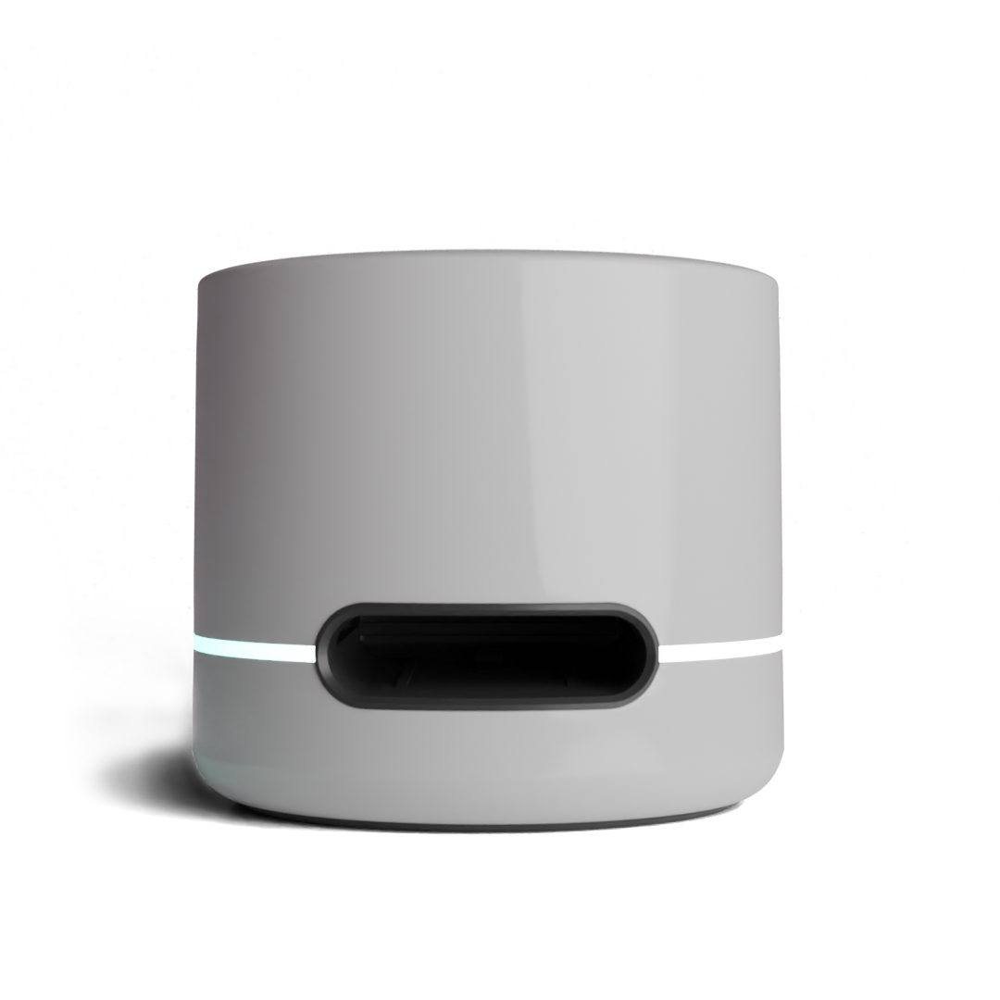

|
IglooPro Point-of-Care Diagnostik
48h Setup-Versprechen
|
|
|
Dental Chairside Diagnostik
Ihr IglooPro ist in 48 Stunden einsatzbereit.
Präzise Chairside-Diagnostik (CRP, Vitamin D, HbA1c & mehr) für implantologische Eingriffe, Prophylaxe
und OP-Freigaben – ohne Laborwartezeit, mit CV < 2% über den gesamten Messbereich.
15-Minuten-Termin vereinbaren
Falls der Button nicht funktioniert: https://www.polarisdx.net/
|

|
|
|
48h
Einsatzbereit nach Bestellung
|
CV < 2%
Präzision über den Messbereich
|
90%
Lateral-Flow-Kompatibilität
|
|
Was Ihre Praxis sofort gewinnt
- Schnelle CRP-Checks vor chirurgischen Eingriffen für klare Go/No-Go-Entscheidungen.
- Vitamin-D- und HbA1c-Sofortergebnisse für Implantatplanung, Wundheilung und Risikoberatung.
- Chairside-Workflow ohne Laborlogistik – Resultate in Minuten, Patientenbindung in der Praxis.
- Neue IGeL-/Serviceerlöse durch präventionsorientierte Gesundheits-Checks.
- Minimaler Platzbedarf, einfaches Gerätetraining, sofort integrierbar in bestehende Abläufe.
|
So läuft das 48h-Setup
- 15-Minuten-Call: Praxis-Use-Cases (chirurgische Eingriffe, Prophylaxe, Akutdiagnostik).
- Geräte- und Test-Kit-Versand abgestimmt auf Ihr Volumen.
- Remote-Inbetriebnahme & Schulung: Wir richten Workflows und Referenzwerte für Ihr Team ein.
- Go-Live innerhalb von 48 Stunden – inkl. QA-Check für Messgenauigkeit.
|
|
„Das Igloo Pro ist chairside eine echte Transformation.“
„Die Möglichkeit, Vitamin-D-Spiegel und andere Schlüsselindikatoren direkt in der Praxis zu messen,
ist enorm. Das Igloo Pro ermöglicht mir einen einfachen kapillären Bluttest, um den Bedarf der
Patient:innen abzuschätzen und Therapieempfehlungen abzustimmen. Das verändert die Behandlungsergebnisse
spürbar.“
Dr. Richard Pollock, Biological Dentist & Implant Surgeon, Chelsea Dental Clinic
|
|
|
|
|
PolarisDX / IglooPro
hello@polarisdx.net · info@polarisdx.net
Sie erhalten diese E-Mail, weil wir Ihre Praxis als potenziellen Partner für schnelle Chairside-Diagnostik identifiziert haben.
Wenn Sie keine weiteren Informationen wünschen, antworten Sie bitte mit „Stopp“.
|